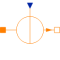

SignalMagneticFluxSignal-controlled magnetic flux source |

|
Information
This information is part of the Modelica Standard Library maintained by the Modelica Association.
This source of a magnetic flux is intended for test purposes, e.g., for simulation and subsequent plotting of a softmagnetic material's magnetisation characteristics if used together with a non-linear reluctance element.
Connectors (3)
| port_p |
Type: PositiveMagneticPort Description: Positive magnetic port |
|
|---|---|---|
| port_n |
Type: NegativeMagneticPort Description: Negative magnetic port |
|
| Phi |
Type: RealInput Description: Magnetic flux |